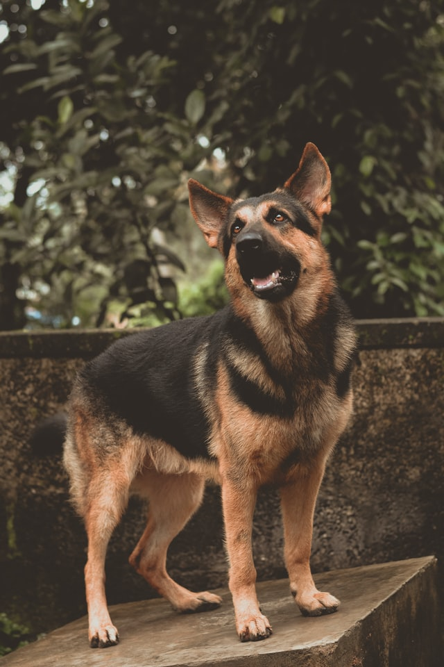

German Shepherd

From Wikipedia: German Shepherd.
The German Shepherd (German: Deutscher Schäferhund, German pronunciation: [ˈdɔʏtʃɐ ˈʃɛːfɐˌhʊnt]) is a breed of medium to large-sized working dog that originated in Germany. According to the FCI, the breed's English language name is German Shepherd Dog. The breed name was officially known as the "Alsatian Wolf Dog" in the UK from after the First World War until 1977 when its name was changed back to German Shepherd.[2] Despite its wolf-like appearance, the German Shepherd is a relatively modern breed of dog, with its origin dating to 1899.
As a herding dog, German Shepherds are working dogs developed originally for herding sheep. Since that time, however, because of their strength, intelligence, trainability, and obedience, German Shepherds around the world are often the preferred breed for many types of work, including disability assistance, search-and-rescue, police and military roles and acting.[3][failed verification] The German Shepherd was the third-most registered breed by the American Kennel Club in 2020,[4] and seventh-most registered breed by The Kennel Club in the United Kingdom in 2016.[5]
Description

German Shepherds are medium to large-sized dogs.[6] The breed standard height at the withers is 60–65 cm (24–26 in) for males, and 55–60 cm (22–24 in) for females.[7][8][9] German Shepherds are longer than they are tall, with an ideal proportion of 10 to 8+1⁄2. The AKC official breed standard does not set a standard weight range.[10] They have a domed forehead, a long square-cut muzzle with strong jaws and a black nose. The eyes are medium-sized and brown. The ears are large and stand erect, open at the front and parallel, but they often are pulled back during movement. A German Shepherd has a long neck, which is raised when excited and lowered when moving at a fast pace as well as stalking. The tail is bushy and reaches to the hock.[8]
German Shepherds have a double coat which is close and dense with a thick undercoat. The coat is accepted in two variants: medium and long. The gene for long hair is recessive, and therefore the long-haired variety is rarer. Treatment of the long-haired variation differs across standards; it is accepted but does not compete against standard-coated dogs under the German and UK Kennel Clubs while it can compete with standard-coated dogs, but is considered a fault, in the American Kennel Club.[8][10][11] The FCI accepted the long-haired type in 2010, listing it as the variety b, while the short-haired type is listed as the variety a.[12]
Most commonly, German Shepherds are either tan/black or red/black. Most color varieties have black masks and black body markings which can range from a classic "saddle" to an overall "blanket". Rarer color variations include the sable, pure-black, pure-white, liver, silver, blue, and panda varieties. The all-black and sable varieties are acceptable according to most standards; however, the blue and liver are considered to be serious faults and the all-white is grounds for instant disqualification from showing in conformation at All Breed and Specialty Shows.[10]
Intelligence
German Shepherds were bred specifically for their intelligence.[13] In a list of breeds most likely to bark as watchdogs, Stanley Coren ranked the breed in second place.[3] Coupled with their strength, this trait makes the breed desirable as police, guard and search and rescue dogs, as they are able to quickly learn various tasks and interpret instructions better than other breeds.[14]
Temperament
German Shepherds are moderately active dogs and are described in breed standards as self assured.[10] The breed is marked by a willingness to learn and an eagerness to have a purpose. They are curious, which makes them excellent guard dogs and suitable for search missions. They can become overprotective of their family and territory, especially if not socialized correctly.[15] They are not inclined to become immediate friends with strangers.[16] German Shepherds are highly intelligent and obedient, as well as protective of their owners.[17]